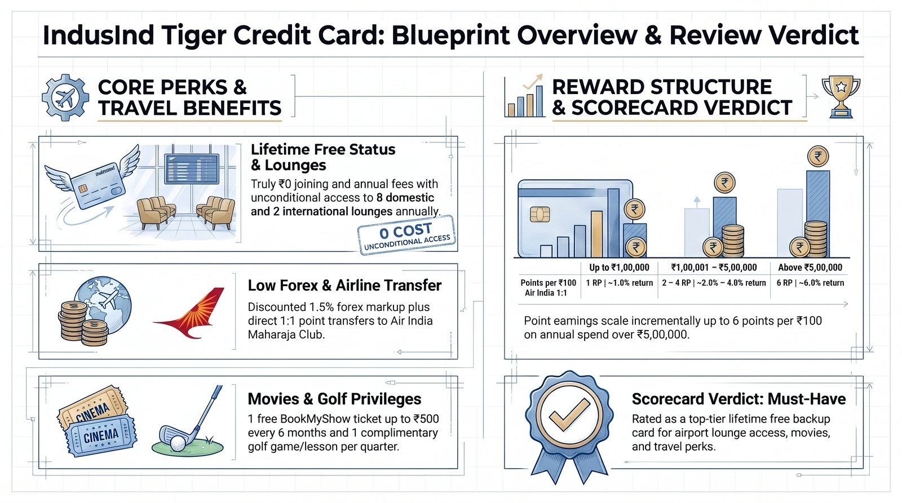

IndusInd Bank Tiger Credit Card Review (2026): Why This ₹0 Card Deserves a Spot in Your Wallet
Disclaimer: This article contains affiliate links. If you apply for the card through the links on this page, I may earn a small commission at no extra cost to you. This is educational content based on my research—not financial, tax, or legal advice. Credit card features, reward structures, lounge rules, and fees change frequently, so please verify the latest terms and conditions on the official IndusInd Bank website before applying.
Let’s be honest—airport lounge access in India has become a headache lately. Even on paid credit cards, most banks now ask you to spend ₹50,000 or ₹1 lakh every quarter just to walk in for a free coffee and sandwich before your flight.
That’s why the IndusInd Bank Tiger Credit Card (a Visa card co-branded with Tiger Fintech / Bajaj Capital) stands out in 2026. It is truly Lifetime Free (₹0 fee), offers 10 free airport lounge visits a year with zero spend criteria, and packs in free movie tickets, golf lessons, roadside assistance, and 1:1 Air India Maharaja Club transfers.
Before you rush to apply, let’s break down all the benefits, the real reward math, and the fine-print catches banks don’t advertise.

1. Quick Snapshot
| Feature | Details |
|---|---|
| Joining / Renewal Fee | ₹0 / ₹0 (Truly Lifetime Free — no annual spend waiver condition) |
| Add-On Card Fee | ₹0 |
| Card Network | Visa |
| Airport Lounges | 8 Domestic + 2 International / year (Zero spend criteria) |
| Foreign Currency Markup | 1.5% + GST (1.77% effective) |
| Movie & Golf Perks | 2 Free BookMyShow tickets (₹1,000/yr) + 4 Golf games/lessons |
| Best Point Redemption | Air India Maharaja Club (1:1) |
👉 Apply Free for the IndusInd Bank Tiger Credit Card Here
2. Fees & Eligibility Criteria
Fees & Charges
The biggest win here is zero ownership pressure—you don't need to track annual spend milestones just to keep the card free:
-
Joining Fee: ₹0
-
Annual Renewal Fee: ₹0
-
Add-On Card Fee: ₹0
-
Foreign Currency Markup: 1.5% + GST (1.77% effective vs. 4.13% on regular cards)
-
Interest / Finance Charge: 3.50% per month (42% p.a.) if you carry a balance
Who Can Apply?
As per current terms; check the bank's eligibility page before applying.
-
Age & Residency: Indian residents aged 21 to 60 years.
-
Salaried Professionals: Minimum ₹20,000 monthly income, though ₹35,000+ monthly in-hand gives smoother approval odds.
-
Self-Employed: ₹5.4 Lakh+ annual ITR.
-
Credit Score: 740+ CIBIL score recommended.
Quick side note for existing IndusInd users: If you already hold another IndusInd Bank credit card, getting online approval for a second IndusInd card can be tricky. First-time IndusInd cardholders usually get the smoothest approval.
3. Key Benefits of the IndusInd Tiger Credit Card
For a ₹0 annual fee card, the list of travel, lifestyle, and safety benefits is unusually strong:
Travel Benefits
-
10 Free Airport Lounges Every Year (Zero Spend Criteria):
-
Domestic Lounges: 2 complimentary visits per quarter (8 visits/year) across major Indian airports—without spending a single rupee beforehand.
-
International Lounges: 2 complimentary visits per year across 600+ global lounges via Priority Pass.
-
Important Tip: Call IndusInd customer care after card delivery to request your free Priority Pass. And never swipe your Priority Pass at an Indian airport—it triggers a ~$35 (~₹3,000) fee. Use your Visa card directly for domestic lounges.
-
-
Low Foreign Currency Markup (1.5% + GST): Regular Indian credit cards charge 3.5% + GST (4.13% effective) on foreign transactions. The Tiger card charges 1.5% + GST (1.77% effective)—saving you roughly 2.36% on international trips. Plus, international spends earn the same slab reward points.
Everyday Lifestyle, Fuel & Safety Benefits
-
Free BookMyShow Movie Tickets (₹1,000/year): Get 1 free movie ticket every 6 months (up to ₹500 a ticket as per current terms; check your card's terms document). Best part? It is a flat free ticket—not a Buy-One-Get-One (BOGO) offer—so it works whether you go solo or on a date night.
-
Complimentary Golf (4/year): Enjoy 1 free golf game or lesson every quarter at premier courses across India, booked via the IndusInd Golf portal.
-
1% Fuel Surcharge Waiver: Applicable across all fuel stations in India on fuel transactions between ₹400 and ₹4,000.
-
Total Protect Fraud Insurance (Equal to Your Credit Limit): Protects you against unauthorized transactions up to your entire credit limit (including Add-on cards). It covers loss/theft up to 48 hours prior to reporting as well as counterfeit fraud.
-
24/7 Auto Assist (Roadside Assistance / RSA): Facing a car breakdown or flat tyre? Call IndusInd’s 24/7 Concierge (
1860 267 7777) for emergency roadside repair and towing support. As per current terms, it covers Delhi, Mumbai, Pune, Bangalore, Chennai, and Kolkata; check your card's terms document for the latest list.
👉 Check Eligibility & Apply Online for the IndusInd Tiger Card (₹0 Fee)
4. How Reward Points Are Earned & How the Reward Slab Actually Works
You will see plenty of promos saying this card gives "6X rewards." Here is how it actually works: the Tiger card follows incremental slabs—just like Indian Income Tax slabs. You only earn the higher rate on spending above each slab, and your counter resets every card anniversary year. There is no upper cap on how many points you can earn once you cross ₹5 Lakh.
Let’s see exactly how many points you earn across each slab if you spend ₹6,00,000 in a year:
| Annual Spend Slab | Points Earned per ₹100 | Maximum Points Earned in This Slab |
|---|---|---|
| Up to ₹1,00,000 (₹1,00,000 spend) | 1 RP | 1,000 Points |
| ₹1,00,001 – ₹2,50,000 (₹1,50,000 spend) | 2 RP | 3,000 Points |
| ₹2,50,001 – ₹5,00,000 (₹2,50,000 spend) | 4 RP | 10,000 Points |
| Above ₹5,00,000 (Next ₹1,00,000 spend, no upper cap) | 6 RP | 6,000 Points (for ₹5L–₹6L) |
| Cumulative Total (on ₹6,00,000 Annual Spend) | — | 20,000 Reward Points |
What Is 20,000 Points Worth in Cash?
The standard cash conversion ratio on this card is 1 Reward Point = 40 paise (₹0.40).
So, on a ₹6,00,000 annual spend:
20,000 Reward Points x ₹0.40 = ₹8,000
That works out to just 1.33% as direct cash back—and below ₹2.5 Lakh annual spend, the cash return is only 0.4% to 0.8%. That is why how you redeem these points matters so much.
5. Reward Point Conversion & Redemption
While converting 20,000 points into cash gives you just ₹8,000—which is not a great conversion ratio—you can extract far better value by transferring your points to Air India Maharaja Club instead.
Here is how all your redemption options stack up:
-
Air India Maharaja Club (Maximum Benefit — 1:1 Conversion Ratio): Added in June 2026, IndusInd lets you transfer 1 Reward Point = 1 Air India Maharaja Point via the IndusMoments portal (as per current terms, transfers take 2–4 working days and are capped at 25,000 points a month; check your card's terms document). Since 1 Maharaja Point easily gives ₹0.80 to ₹1.00+ of value on flight bookings, those same 20,000 points become ₹16,000 to ₹20,000 worth of flights—giving you up to ~6% effective return on spends above ₹5 Lakh.
-
Singapore Airlines KrisFlyer (4:1 Conversion Ratio): The card also has a tie-up with KrisFlyer where 4 Reward Points = 1 KrisFlyer Mile (capped at 5,000 points/month). At ~₹0.30–₹0.35 per Tiger point, this is not an attractive ratio, so it only makes sense if you are just a few miles short on an existing KrisFlyer account.
-
Cash Credit or Vouchers (Least Recommended — ₹0.40 per Point): Cash redemption not only gives you a lower rate (₹0.40/point), it is also capped at 5,000 points (₹2,000) per month, or 50% of your points balance if that is lower, and attracts a ₹149 + GST cash redemption fee (₹100 + GST for other redemptions).
-
Point Expiry: Remember to redeem your points in time—as per current terms, they expire 24 months from the date you earn them. Check your card's terms document for the exact rule.
6. Where You Won’t Earn Rewards & Hidden Catches
Credit cards work best when you know what not to swipe them on. Here are the key exclusions and extra fees buried in the terms:
Categories That Earn 0% Reward Points
You will not earn any reward points on common household and recurring bills:
-
Household utilities (electricity, gas, water, broadband)
-
Insurance premiums (term life, health, motor)
-
School / education fees
-
House rent and real estate payments
-
Fuel spends
-
Government and tax payments
Extra 1% + GST Surcharges & Limitations
-
Rent Payments: 1% + GST surcharge on every rent transaction.
-
High-Value Non-Retail Spends: An extra 1% + GST fee applies on utilities above ₹25,000/cycle, wallet loads above ₹20,000/cycle, third-party education payments above ₹45,000/cycle, and non-air transport above ₹40,000/cycle.
-
No RuPay UPI: Because it runs on the Visa network, you cannot link it to UPI apps for local QR Scan & Pay.
7. The Math Behind the Magic: Two Real-Life Scenarios
Smart credit card usage isn't about spending extra money—it’s about extracting maximum value from money you already spend. Here is how two realistic users come out ahead:
Scenario 1: The Smart Backup Card User (₹0 – ₹50,000 Annual Spend)
Even if you barely swipe this card and keep it purely for its free perks:
-
Using 4 of your 8 domestic lounge visits = ~₹4,800 (at roughly ₹1,200 a visit)
-
2 International Lounge visits = ~₹4,000 (at roughly ₹2,000 a visit)
-
2 Free BookMyShow tickets = ₹1,000
-
Golf + Auto Assist RSA + Total Protect Fraud Cover = Bonus peace of mind
-
Annual Fee paid = ₹0
-
Net Free Value: ₹8,000 – ₹10,000+ every year for FREE.
Scenario 2: The ₹6 Lakh Annual Spender (₹50,000/month on Eligible Spends)
If you route ₹6 Lakh of travel, dining, and shopping spends through this card in a year:
-
Total Reward Points earned = 20,000 RP.
-
If redeemed as cash: ₹8,000 (~1.33%—pretty average).
-
If transferred 1:1 to Air India: 20,000 Maharaja Points ≈ ₹16,000 – ₹20,000 worth of flights.
-
Plus free lounges & movie tickets (+ ₹9,800) on a ₹0 annual fee.
-
Total Annual Value: ₹25,000+ (~4.2% net yield on a free card!).
8. Who Should Buy (and Who Should Skip) This Card?
Who Should Buy This Card?
Get the IndusInd Tiger Credit Card if you want:
-
A truly ₹0 Lifetime Free card with zero joining fee, zero renewal fee, and zero spend pressure.
-
Free domestic (8/yr) and international (2/yr) airport lounge access without spending a single rupee.
-
Free BookMyShow movie tickets (2/year) and 4 complimentary golf lessons/games.
-
A strong travel and safety backup with 1.5% low forex markup, 1% fuel surcharge waiver, credit-limit-equal fraud insurance (Total Protect), and metro Auto Assist (RSA).
-
1:1 Air India Maharaja Club transfers on higher annual spends.
Who Should Skip This Card?
Skip it—or pair it with another primary card—if:
-
You spend ₹20,000–₹30,000/month mostly on online shopping and want flat direct cashback → Look at SBI Cashback or Amazon Pay ICICI instead.
-
You only want a 0% forex card → Look at Scapia or AU Ixigo.
-
You primarily want UPI Scan & Pay rewards → Look at Tata Neu or Kiwi Yes Bank (RuPay UPI).
9. Save More Money Scorecard & Final Verdict
| Category | Score | Quick Take |
|---|---|---|
| Reward Rate | 3.5 / 5 | Weak for low cash spends; strong 4%–6% for Air India flyers |
| Redemption Ease | 3.5 / 5 | 1:1 Air India Maharaja Club transfer lifts value; cash has caps & ₹149 + GST fee |
| Perks, Lounges & Safety | 5.0 / 5 | 8+2 unconditional lounges, movies, golf, RSA & Total Protect |
| Fee Justification | 5.0 / 5 | ₹0 Lifetime Free = 100% pure upside |
My Verdict: Must-Have Because it costs ₹0 to hold and requires ₹0 spend to unlock lounges, movies, golf, and metro roadside assistance, the IndusInd Bank Tiger Credit Card is easily one of the strongest Lifetime Free backup cards in India for 2026. Even if you never chase the ₹5 Lakh reward slab, the free perks alone justify keeping it in your wallet.
👉 Apply Now for the IndusInd Bank Tiger Credit Card (₹0 Fee)
10. Common Questions (FAQs)
1. Is the IndusInd Tiger Credit Card really Lifetime Free? Yes. Both the joining fee and annual renewal fee are ₹0 with no spend requirement to waive the fee.
2. Do I need to spend a minimum amount to unlock airport lounge access? No. You get 2 domestic lounge visits per quarter (8/year) and 2 international lounge visits per year via Priority Pass with zero spend criteria.
3. Can I swipe my Priority Pass at Indian airports? No—only use your Priority Pass at international airports outside India. Swiping it at Indian airports triggers a ~$35 (~₹3,000) fee.
4. Which cities cover the 24/7 Auto Assist roadside assistance?
Auto Assist (emergency roadside repair and towing via 1860 267 7777) is available in Delhi, Mumbai, Pune, Bangalore, Chennai, and Kolkata as per current terms; check your card's terms document for the latest list.
5. What is the best way to redeem IndusInd Tiger reward points? Transferring points 1:1 to Air India Maharaja Club gives the highest return (~₹0.80–₹1.00+ per point), compared to ₹0.40/point in cash credit.
Final Reminder: Bank policies, lounge access rules, and reward exclusions can be revised without prior notice. Please always check the latest Most Important Terms & Conditions (MITC) on the official IndusInd Bank website before applying.